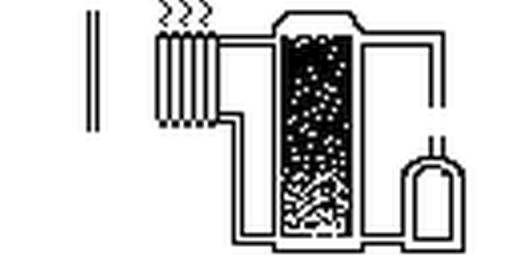

I'm working the the GLCD at the moment and want to use large complex graphics. Doing this manually is pretty painful, so I was about to write a Python script to do the job when I found this tool:
I hope this is helpful to others.
This is the kind of display I am looking to create:

Re: Tool to generate bitmap data arrays for GLCD
Awesome! Looks cool, thanks for sharing
Re: Tool to generate bitmap data arrays for GLCD
Hi,
I made my screens with this little (also opensource) tool: "lcd image converter"Nice thing about "my" tool is that you actual can make drawings with it. (tip: it saves the array code by pressing ctrl+p or file>convert) And you can also set custom convert methods on it.
I used it for my first RasberryPI GPIO screens at this post: http://openenergymonitor.org/emon/node/3948
Re: Tool to generate bitmap data arrays for GLCD
So I were a bit bored and made your custom drawing within 10 minutes on the lcd image converter tool that I just mentioned. here it is!

(I magnified the image for the forum a bit, the boiler.c file has an 127x64 image in it.) I can send the program xml if you want. )
Re: Tool to generate bitmap data arrays for GLCD
Thanks alco - that's really nice work, looks a lot better than the original!
Re: Tool to generate bitmap data arrays for GLCD
OK, that is cool. I haven't been that tempted by the emonGLCD but you might be able to change my mind...
Re: Tool to generate bitmap data arrays for GLCD
alco - could you attach the XML as the C is in a different format to the one needed by the GLCD?
Re: Tool to generate bitmap data arrays for GLCD
So, using the new tool it is pretty easy to create nice icons.
For the script in the "Conversion" settings, I find this works:
With this I have knocked up a quick mock-up of a heatpump system:
https://www.youtube.com/watch?v=UrLSAy5oyYw&feature=youtu.be
Re: Tool to generate bitmap data arrays for GLCD
that youtube is cool. animated frames :) like that! Can please post some (arduino) C code from that part ??
My XML is just the lcd-image-converter (LIC) save file XML. nothing special. but I attached it (please rename the .txt to .xml) and also did some cleaning on the image..
I also discovered an other option for making this icons/frames. "the GIMP" has also an option for making C arrays. http://www.zilogic.com/blog/tutorial-glcd-bitmaps.html GIMP is more like photoshop..so much bigger (and feature rich) but the output is not more than LIC does.
I will create more icons and pages to this week :) and hope to receive my replacement screen soon.
Re: Tool to generate bitmap data arrays for GLCD
The animation and general code is basic - I was just playing around to see what was possible. I'm a bit worried that the ATmega328 is just not big enough.
Anyway, code if you are interested:
https://github.com/cybergibbons/Heatpump-animation
Thanks for the hint on the LIC tool and also the bubbling water tank!